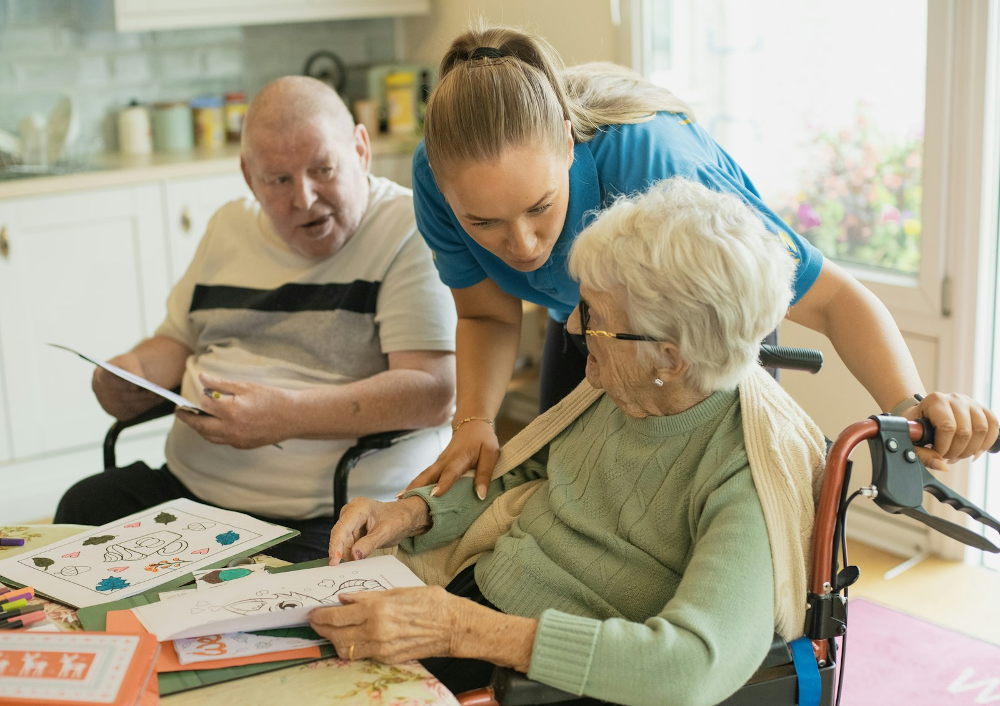

RESEARCH
Live music for memory care residents
What the studies say live music can and can't do for residents living with dementia, the songs they respond to, how loud it should be, and how a performance differs from music therapy.

- In two small studies, residents were more engaged during live music than during recorded music or silence, and a 2020 review credited live music with better communication and relationships.
- The most careful review of the trials found that therapeutic music programs probably reduce symptoms of depression slightly, with no effect on agitation and nothing that lasted four weeks after the sessions ended.
- The songs that feel most personal are usually the ones released when a listener was about 10 to 30, which for a resident who's 80 or 85 in 2026 is roughly 1951 to 1976.
A resident who hasn’t said much all day hears a song from when they were young, and a line or two in, they’re singing along. If you work in memory care, you’ve probably seen it happen more than once. A lot gets said about music and dementia, and not all of it holds up, so we looked at what the studies found.
Does music help dementia patients? #
It seems to help in a few ways, though not as much as you may have heard. The most careful summary of the trials is the Cochrane review, which covered 30 trials and 1,720 people in its 2025 update. It looked at therapeutic music programs of at least five sessions, so these were structured programs and not performances like the ones we book. It found they probably reduce symptoms of depression slightly. It found no effect on agitation or aggression, and no effect on anything four weeks or more after the sessions ended.
In a 2022 trial across 54 nursing homes and 976 residents, researchers tested a program that gives residents headphones and a personal playlist. It didn’t significantly reduce agitation or the use of medication.
Is live music better than recorded for residents? #
Two small studies say yes, at least for engagement. In a 2006 British study, 32 people living with moderate to severe dementia and apathy each spent 30 minutes with live interactive music, 30 with recorded music and 30 in silence. An observer who didn’t know what the study was for rated a muted video of each session. Residents were positively engaged 69% of the time during live music, 25% with recorded music and 12.5% in silence, and nobody showed distress in either music session. That’s 32 people, though, and engagement was measured only during the half hour itself.
In 2004, researchers observed 24 people with moderate to severe dementia during live music, recorded music and no music. Live music raised engagement and wellbeing more than recorded music did. It made no difference to challenging behavior.
A 2012 Dutch study had professional singers give small, close-up performances for nursing-home residents with dementia, and the researchers had complete results for 45 of them. Caregivers and family members reported better contact with the resident and better mood afterwards, especially for residents with mild dementia. But the people doing the rating knew a performance had just happened.
Looking across 15 studies, a 2020 review found that recorded-music programs gave the more consistent improvements in behavior, and that live music was credited with better communication and relationships.
What music do residents respond to? #
Usually it’s the songs from when they were young. A 2024 study asked 112 older adults to rate songs from the 1950s to the 1980s, and the songs that felt most personal were the ones released when the listener was between about 10 and 30. A 2025 study of 1,891 people put the peak at age 17.
By our arithmetic, for a resident who’s 85 in 2026, those years are roughly 1951 to 1971, and for a resident who’s 80 they’re roughly 1956 to 1976. A resident who’s 80 today was 17 or 18 when the Beatles first played The Ed Sullivan Show in February 1964. If your residents would rather sing than listen, check out our Beatles sing-along.
In a 2000 study of 39 residents in six Iowa care homes, music chosen for each resident from their own history reduced agitation more than generic classical “relaxation” music did. That was recorded music and a small study. Since it compared two kinds of music with each other, we take it as a reason to choose a resident’s own songs.
A 2015 study of 73 people with different forms of dementia found that about half had changed in how they responded to sound. In people with Alzheimer’s disease, the change the researchers saw was a new dislike of everyday sounds. So some residents may not enjoy music, and it helps when a resident can leave or the musician can stop. If you’d like to think about this some more, check out a longer read on music for people who can’t choose it or leave.
How loud should it be? #
It helps to start with hearing. In the United States, 22% of people aged 65 to 74 and 55% of those 75 and older have disabling hearing loss. In a survey of 523 hearing-aid users, people said their hearing aids helped less with live music than with recorded music.
No study we found sets a volume for live music in memory care, and none tests which time of day works best. You’ll know better than we do when your residents are most up for it. On volume, all we can offer is our experience. Our musicians usually keep it around the level of a conversation, and in a small lounge they can play without amplification. For memory care, they play a shorter set for a smaller group and set up closer in, and they follow the residents’ lead on when a set should end.
Is this music therapy? #
No, it isn’t. Music therapy is a clinical service from a credentialed music therapist, who works toward goals for an individual resident. When you book with us, musicians come and perform for your residents, playing the music from those years and taking requests. Learn more about what a visit looks like on our senior living page.
Sources
- van der Steen, J. T., van der Wouden, J. C., Methley, A. M., Smaling, H. J. A., Vink, A. C., and Bruinsma, M. S. (2025). Music-based therapeutic interventions for people with dementia. Cochrane Database of Systematic Reviews. Read the source
- McCreedy, E. M., and others (2022). Pragmatic trial of personalized music for agitation and antipsychotic use in nursing home residents with dementia. Journal of the American Medical Directors Association. Read the source
- Holmes, C., Knights, A., Dean, C., Hodkinson, S., and Hopkins, V. (2006). Keep music live: music and the alleviation of apathy in dementia subjects. International Psychogeriatrics. Read the source
- Sherratt, K., Thornton, A., and Hatton, C. (2004). Emotional and behavioural responses to music in people with dementia: an observational study. Aging & Mental Health. Read the source
- van der Vleuten, M., Visser, A., and Meeuwesen, L. (2012). The contribution of intimate live music performances to the quality of life for persons with dementia. Patient Education and Counseling. Read the source
- Clare, A., and Camic, P. M. (2020). Live and recorded group music interventions with active participation for people with dementias: a systematic review. Arts & Health. Read the source
- Salakka, I., and others (2024). Emotional and musical factors combined with song-specific age predict the subjective autobiographical saliency of music in older adults. Psychology of Music. Read the source
- Burunat, I., and others (2025). Memory bumps across the lifespan in personally meaningful music. Memory. Read the source
- Gerdner, L. A. (2000). Effects of individualized versus classical "relaxation" music on the frequency of agitation in elderly persons with Alzheimer's disease and related disorders. International Psychogeriatrics. Read the source
- Fletcher, P. D., and others (2015). Auditory hedonic phenotypes in dementia: a behavioural and neuroanatomical analysis. Cortex. Read the source
- National Institute on Deafness and Other Communication Disorders (2024). Quick statistics about hearing. Read the source
- Madsen, S. M. K., and Moore, B. C. J. (2014). Music and hearing aids. Trends in Hearing. Read the source